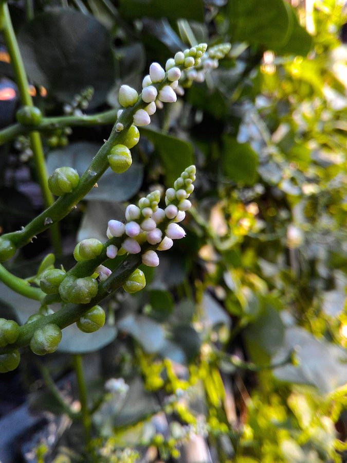

पोईMalabar Spinach
Basella alba · Basellaceae · FLR-0279

- Scientific name वैज्ञानिक नाम
- Basella alba L.
- Family कुल
- Basellaceae
- Hindi हिंदी
- पोई
- Local names स्थानीय नाम
- poi, poi saag, pui, malabar spinach
- Status here यहाँ की स्थिति
- cultivated
- Movement आवागमन
- Resident, here all year
- Known from कहाँ दर्ज
- Others have published records from the Basti–Ayodhya districts बस्ती–अयोध्या के ज़िलों से दूसरों के प्रकाशित अभिलेख
- IUCN IUCN
- not evaluated
- Review समीक्षा
- audited and independently read
When to look कब देखें
Expected mainly in May, June, July, August, September, October. मुख्यतः मई, जून, जुलाई, अगस्त, सितंबर, अक्टूबर में अपेक्षित।
Uses and possibilities उपयोग और संभावनाएँ
“Traditional medicine” means a documented traditional use, not a claim that it works. Nothing on this page is medical advice.
Drawn from the documented uses in the profile below, where each is labelled traditional, current or a research lead. All uses →
पोई / Malabar Spinach
Basella alba L. — Basellaceae
पोई (पुई) — एक गर्म मौसम की हरी सब्जी है जो पूरे भारत में उगाई जाती है। यह एक लंबी बेल है जो मचान पर चढ़ती है, मोटी, मांसल पत्तियाँ होती हैं जो नरम और खाने योग्य होती हैं। पत्तियाँ अंडाकार, हरी, चिकनी, और रसीली होती हैं। गर्मी में छोटे गुलाबी या सफ़ेद फूल खिलते हैं। बहुत पौष्टिक पत्तियाँ भारतीय रसोई में एक पारंपरिक गर्मकालीन साग हैं। गर्मी में इसके लिए बहुत माँग होती है। पत्तियों को पकाया जाता है और प्रायः दाल के साथ खाया जाता है।
Quick Identification त्वरित पहचान
| Feature | Description |
|---|---|
| Form | Fleshy, trailing or climbing annual vine, 1–3 m long, with soft succulent stems |
| Leaves | Alternate, simple, ovate to cordate, 5–12 cm long, dark green, smooth, thick, waxy, succulent |
| Flowers | Small, pink or white, clustered, 0.3–0.5 cm across; inconspicuous |
| Fruit | Berries, globose, 0.5–0.8 cm diameter, dark purple or black when ripe; one seed per berry |
| Stem | Smooth, fleshy, green to reddish, lacking hairs |
Field tip: A soft, fleshy climbing vine with thick, succulent, waxy leaves; pink or white flowers; and small dark berries; leaves are edible and commonly harvested as greens.
Morphology आकारिकी
| Feature | Measurement |
|---|---|
| Vine length | 1–3 m |
| Leaf length | 5–12 cm |
| Leaf width | 3–8 cm |
| Flower size | 0.3–0.5 cm across |
| Berry diameter | 0.5–0.8 cm |
Stem and petiole: Fleshy, smooth, succulent; petioles are 1–3 cm long.
Root system: Fibrous roots in shallow soil layer; not deep-rooted.
Associated Species / Interactions सहजीवी संबंध
- Pollinator: Flowers are visited by small insects and beetles
- Insect host: Leaves are occasionally infested by spider mites and aphids
- Structure host: Grown on poles and trellises; provides shade structure for other plantings
- Nitrogen cycle: Residue incorporation improves soil organic matter
Life Cycle / Phenology जीवन चक्र
- Sowing: Sown in May–June in warm season
- Germination: Emerges within 7–10 days with warmth and moisture
- Vegetative growth: Rapid growth of trailing vines in June–July; leaves expand continuously
- Flowering: Small flowers open in July–August; flowering continues throughout warm season
- Fruit set: Berries develop within 2–3 weeks of flowering
- Harvest: Tender leaves are harvested continuously from June through September; frequent harvesting encourages bushier growth
Pests and Diseases कीट और रोग
- Spider mites: Tetranychus species cause yellowing of leaves in dry, hot conditions
- Mealybugs: Planococcus species infest stems and leaves
- Fungal diseases: Rare; occasionally Cercospora leaf spots in humid conditions
- Bacterial wilt: Rare; can affect vines in waterlogged soils
Agricultural / Human Relevance कृषि प्रासंगिकता
Summer green vegetable crop.
- Greens preparation: Tender leaves are cooked and eaten as a traditional summer green vegetable; soft texture when cooked
- Nutritional value: Rich in vitamins A and C, calcium, iron, and other minerals; high in moisture content
- Taste: Mild, slightly mucilaginous when cooked; often combined with dals and other vegetables
- Cultivars: Local landraces; green and red-stemmed varieties
- Market demand: High demand in summer markets; popular in North Indian cuisine
Traditional and Ethnobotanical Use
- Summer cooling vegetable: Considered cooling in Ayurvedic tradition and consumed in hot months
- Skin health: Traditional beliefs attribute leaf consumption to skin health and glow
- Nutritional tonic: Cooked leaves are given to children as a nourishing green vegetable
Cultivation Calendar
| Stage | Month(s) |
|---|---|
| Field preparation | April–May |
| Sowing | May–June |
| Germination and growth | June |
| Continuous harvest | July–October |
Expected Locally स्थानीय रूप से अपेक्षित
Not a field record. Written from published accounts for eastern Uttar Pradesh. No confirmed local sighting yet — if you have seen it, that is what the atlas needs.
अभी तक स्थानीय पुष्टि नहीं। यह विवरण प्रकाशित स्रोतों से है, किसी अवलोकन से नहीं।
Basella alba is expected as a summer green vegetable crop in Basti district. Look for it in gardens and fields from May through October, recognizable by fleshy trailing vines with thick succulent leaves and pink flowers. The first local record would be a photograph with date and location.
Distribution वितरण
Global range: Native to tropical Asia; now cultivated throughout warm regions.
In India: Widely cultivated throughout the Indo-Gangetic plain and South India as a summer green vegetable.
In Uttar Pradesh: Common in all districts as a summer and monsoon green vegetable crop.
In Basti district / eastern UP: Cultivated resident; very common in home gardens and fields during warm season.
Research Questions शोध प्रश्न
- How frequently can Malabar spinach leaves be harvested without reducing overall plant vigor? / कितनी बार पोई की पत्तियाँ तोड़ी जा सकती हैं?
- Which nutrients (iron, calcium, vitamin A) are most abundant in fresh poi leaves compared to other greens?
- Does the mucilaginous content of cooked poi leaves affect digestion or absorption of other nutrients?
- Can children grow poi from seed to harvest in a small pot and consume the greens within a season?
- How does temperature affect the thickness and texture of poi leaves in monsoon vs. summer?
Similar Species मिलती-जुलती प्रजातियाँ
| Species | Key Difference | हिंदी | |
|---|---|---|---|
| Spinacia oleracea (Spinach) | Smaller, more delicate leaves; winter crop; different family | अलग पत्तियाँ, सर्दी की फसल | |
| Amaranthus species (Amaranth) | Leaves are smaller and thinner; tall with terminal panicles; different family | पत्तियाँ पतली, पुष्प शीर्ष पर | |
| Solanum nigrum ([[makoi\ | Black Nightshade]]) | Leaves are smaller; black berries; different family; toxic | छोटी पत्तियाँ, काले फल |
Field rule: A soft, fleshy, succulent climbing vine with thick waxy leaves and pink flowers, grown on trellises for tender green leaves, distinguishes Malabar spinach.
Taxonomy & Classification वर्गीकरण
Original description. Carl Linnaeus described Malabar Spinach as Basella alba in 1753 in Species Plantarum. The genus name Basella is of obscure origin. The specific epithet alba means "white," referring to the white flower form.
Subspecies. Monotypic; color variations (green and red-stemmed) exist but are not formally recognized subspecies.
Family and order placement. Order Caryophyllales, family Basellaceae (monotypic family); previously placed in Chenopodiaceae or Amaranthaceae.
Phylogenetic notes. Basella alba is native to tropical Asia; widely introduced and naturalized in warm regions worldwide.
IUCN status rationale. Not evaluated. As a widely cultivated crop, it faces no conservation threats.
Photo Gallery फोटो गैलरी
No photos yet — add field photos to media/species/malabar_spinach/ and run node scripts/sync_photos.js.
References संदर्भ
- Linnaeus, C. (1753). Species Plantarum. Laurentii Salvii, Holmiae, Vol. 2, p. 1193. [original description]
- Indian Council of Agricultural Research (2021). Handbook of Vegetable Crops. ICAR, New Delhi.
- Directorate of Vegetable Research (2019). Package of Practices for Leafy Vegetables. DVR, Varanasi.
- Ensminger, A.H., Ensminger, M.E., Konlande, J.E. & Robson, J.R.K. (1983). Food & Nutrition Encyclopedia. Pegus Press, Clovis, California.
- Botanical Survey of India (2015). State Flora Series: Flora of Uttar Pradesh. BSI, Kolkata.
- GBIF Occurrence Data — Basella alba, India (2024–2026).
Source file: species/flora/crops/malabar_spinach.md